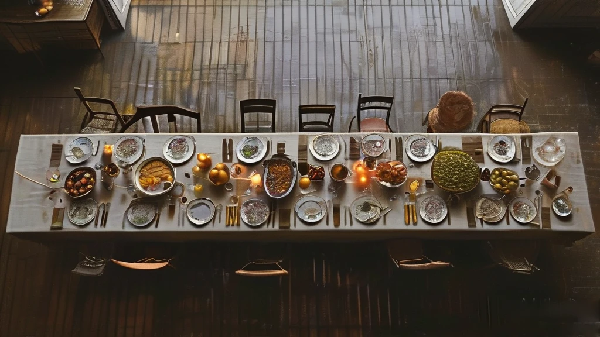
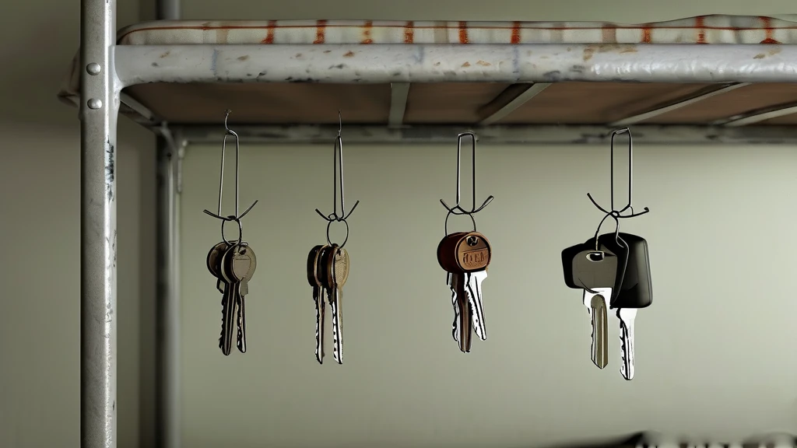

圖片由 AI輔助創作Image by AI
【鄭哥點評】欄目：鄭哥博客點評｜日期：2026-11-18
2000 年到 2012 年，我帶過嘅人，一半係屋企人。十二年之後回頭睇，我唔係唔識用人——我係把四樣嘢混成一件事：親情、恩情、僱傭、培養。混埋一齊之後，帳算唔清，情亦傷埋。呢篇唔講大道理，只講我踩過嘅三個坑，同我而家點改。

圖片由 AI輔助創作Image by AI
一、八成以上：呢個唔係我一個人嘅問題
先講個數：新華網 2025 年 11 月報道《中國家族企業治理報告》發布，中國民營經濟研究會會長李兆前在會上講，我國 5800 多萬戶民營企業中，家族企業佔民營企業總量八成以上。
《中國經濟周刊》2024 年 8 月亦引中國民營經濟研究會數據：中國民營企業中八成以上為家族企業；2017 至 2022 年五年間，約四分之三的家族企業面臨交接班。
我為咩要先擺呢兩個數？因為咁多年我最容易犯嘅一個錯，就係把「帶自己人失敗」當成自己無能。事實係：八成人都在做同一件事，唔係我特別差，而係呢件事本身難——難在你唔止係老闆，你仲係親戚。
來源：新華網《《中國家族企業治理報告》在京發布》，2025-11-19｜http://www.news.cn/enterprise/20251119/056c7758da184099bd22744f4a0d8d94/c.html

圖片由 AI輔助創作Image by AI
二、第一個坑：把「機會、照顧、考驗」混成一件事
當年我點對自己人？畀宿舍、畀兩三千生活費、畀檔口、畀錢佢去搵貨。本意好清楚：培養，畀機會。
問題係我把三樣嘢溝埋一齊：機會、照顧、考驗。親戚朋友坐低，好難開口講「你人工幾多、考核標準係乜、權限到邊、蝕錢點算」——講出口好似唔夠人情。於是帳一直唔清，怨氣一直積。
相反，我請外人嘅時候，第一日就可以講清楚：人工幾多、做咩位、攞貨額度幾多、蝕錢點分。唔係外人更懂感恩，而係外人嘅關係一開始就可以明算帳。
呢個坑我睇咗好多年才明白：親情唔怕講錢，親情怕嘅係「講唔清」。講唔清，雙方各自在心裡記一本帳，兩本帳永遠對唔上。
來源：《中國經濟周刊》《民營企業「交接班」進行時》，2024-08-15｜http://paper.people.com.cn/zgjjzk/html/2024-08/15/nw.zgjjzk_20240815_2-02.htm
圖片由 AI輔助創作Image by AI
三、第二個坑：訓練冇授權，等於逼人扛雷
我試過最狠嘅訓練，係叫佢哋「唔帶錢，把貨收返嚟」。呢一招真係練得到嘢：練臉皮、練談判、練判斷邊個係真貨主。方向我而家都唔會否定。
但訓練要有四樣配套：額度、供應商名單、失敗兜底、事後復盤。缺一樣，訓練就變質——變成「老闆逼我扛雷」。
後來我見到佢哋能自己直接拿貨、落單、退貨，證明訓練有效。但我要老實講一句：有效唔等於關係健康。當一個人係靠「唔敢同你講蝕咗幾多」撐落去，個關係已經有裂縫。
來源：《中國經濟周刊》《民營企業「交接班」進行時》，2024-08-15｜http://paper.people.com.cn/zgjjzk/html/2024-08/15/nw.zgjjzk_20240815_2-02.htm
圖片由 AI輔助創作Image by AI
四、第三個坑：拿恩情當規矩
我帶出來十幾二十個，佢哋能立足、能賺錢，證明培養有效。但人走咗之後唔念恩，好常見。我失落過，亦嬲過。
直到我睇到世界銀行集團 IFC 中文版《家族企業治理手冊》入面，李錦記嘅家族憲法點寫：家族歡迎成員加入企業，但必須先在家族以外嘅公司工作 3 至 5 年；而且應聘程序同入職後嘅考核，必須同非家族成員相同。
我睇完坐咗一陣。人哋係把「愛」同「規矩」分開寫，寫入家族憲法；我當年只寫咗「愛」，規矩留喺心裡，於是每次都要靠「你應該記得我對你好」去維持。
更準確嘅講法係：有規則，好聚好散；冇規則，恩情變仇。
來源：國際金融公司（IFC）《家族企業治理手冊》（中文版）｜https://www.ifc.org/content/dam/ifc/doc/mgrt/family-business-handbook-chinese.pdf
圖片由 AI輔助創作Image by AI
五、鄭哥點評
唔係唔可以帶自己人，係唔可以唔講規矩。親情本身唔係問題，親情加上「講唔清」才是問題。
唔係唔可以講恩情，係唔可以拿恩情代替規則。恩情係事後嘅紅利，唔應該當成入職前嘅合約。
唔係外人更可靠，係外人一開始就能把條件講清楚——呢個優勢，其實自己人都可以有，只要你肯第一日就開口。
我而家選人，睇四樣：賬目清唔清、講話算唔算、遇到利益點揀、事後能唔能復盤。耐苦只係入口，唔係全部。
最後一句：用人用得好，一輩子係夥伴；用唔好，至少好聚好散。而我用咗十二年才學識——規矩唔係用來防親人，係用來保護親人。
圖片由 AI輔助創作Image by AI
\[Zheng Ge's Take\] Column: Zheng Ge's blog commentary | Date: 2026-11-18
From 2000 to 2012, half the people I managed were relatives. Looking back twelve years later, the problem was not that I could not manage people - it was that I mixed four things into one: kinship, gratitude, employment and training. Once they were blended, the accounts could not be settled and the feelings got damaged too. This piece has no grand theory, only three pits I fell into and how I do it now.
圖片由 AI輔助創作Image by AI
1. Over eighty per cent: this is not my problem alone
Start with a number. Xinhua reported in November 2025 on the release of the China Family Business Governance Report, where Li Zhaoqian, president of the China Association of Private Economy Research, said that of China's more than 58 million private enterprises, family firms account for over eighty per cent.
China Economic Weekly in August 2024, citing the same association, put family firms above eighty per cent of private enterprises, with roughly three quarters of them facing succession between 2017 and 2022.
Why put these two numbers first? Because for years my easiest mistake was to treat 'failing with my own people' as personal incompetence. The truth is that eighty per cent of businesses are doing the same thing. It is not that I was unusually bad - it is that the thing itself is hard, because you are not only the boss, you are also the relative.
Source: 新華網《《中國家族企業治理報告》在京發布》，2025-11-19 | http://www.news.cn/enterprise/20251119/056c7758da184099bd22744f4a0d8d94/c.html
圖片由 AI輔助創作Image by AI
2. Pit one: blending opportunity, care and testing into one
How did I treat my own people back then? I gave them a dorm room, two or three thousand a month for living costs, a stall, and money to go and source goods. The intent was clear enough: train them, give them a chance.
The problem was that I blended three things: opportunity, care and testing. Sitting down with a relative, it is very hard to say 'here is your salary, here is the assessment standard, here is your authority limit, here is how losses are split' - saying it out loud feels ungenerous. So the accounts stayed unclear and resentment quietly accumulated.
With outsiders, by contrast, I could state everything on day one: the pay, the role, the purchasing limit, how losses are shared. It is not that outsiders are more grateful; it is that an outsider relationship can be put in numbers from the start.
It took me years to see the shape of this pit: family ties are not afraid of money, they are afraid of ambiguity. When things stay unsaid, both sides keep a private ledger, and those two ledgers never reconcile.
Source: 《中國經濟周刊》《民營企業「交接班」進行時》，2024-08-15 | http://paper.people.com.cn/zgjjzk/html/2024-08/15/nw.zgjjzk_20240815_2-02.htm
圖片由 AI輔助創作Image by AI
3. Pit two: training without authority is just pushing risk downhill
The harshest training I ever ran was telling them: go and bring the goods back without cash. It genuinely trains something - nerve, negotiation, and the judgement to tell a real owner of stock from another middleman. I still would not argue with the method.
But training needs four supports: a spending limit, a supplier list, a fallback when it fails, and a review afterwards. Take one away and the training changes nature - it becomes 'the boss pushing the risk downhill'.
Later I watched them place orders and return goods on their own, which proved the training worked. But let me be honest: working is not the same as healthy. When a person keeps going because they dare not tell you how much they lost, the relationship already has a crack in it.
Source: 《中國經濟周刊》《民營企業「交接班」進行時》，2024-08-15 | http://paper.people.com.cn/zgjjzk/html/2024-08/15/nw.zgjjzk_20240815_2-02.htm
圖片由 AI輔助創作Image by AI
4. Pit three: using gratitude in place of rules
I brought up a dozen or twenty people; they found their feet and made money, which proves the training worked. But people leaving without a word of gratitude is common. I have felt let down, and I have been angry.
Then I read the Chinese edition of IFC's Family Business Governance Handbook, and the Lee Kum Kee family constitution: the family welcomes members into the business, but they must first work three to five years at a company outside it, and both the application process and post-hire assessment must be identical to those for non-family staff.
I sat with that for a while. They wrote love and rules as two separate documents and put both into a constitution. I only wrote the first one and kept the rules in my head, which meant every relationship had to be sustained by 'you should remember how good I was to you'.
The accurate version is: with rules, people part well; without rules, gratitude turns into grievance.
Source: 國際金融公司（IFC）《家族企業治理手冊》（中文版） | https://www.ifc.org/content/dam/ifc/doc/mgrt/family-business-handbook-chinese.pdf
圖片由 AI輔助創作Image by AI
5. Zheng Ge's Take
It is not that you cannot hire your own people; it is that you cannot skip the rules. Kinship is not the problem - kinship plus ambiguity is.
It is not that you cannot speak of gratitude; it is that gratitude cannot stand in for rules. Gratitude is a dividend paid afterwards, not a contract signed beforehand.
It is not that outsiders are more reliable; it is that outsiders can state terms on day one. Your own people could have the same advantage - if you are willing to say it out loud on the first day.
I now pick people on four things: whether their books are clean, whether their word holds, how they choose when money is on the line, and whether they can review themselves afterwards. Enduring hardship is only the doorway, not the whole test.
One last line: hire well and you have partners for life; hire badly and at least part as friends. It took me twelve years to learn this - rules are not there to guard against your family. They are there to protect them.